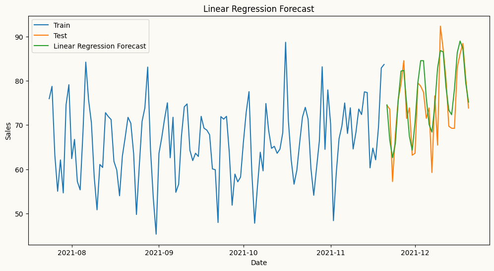
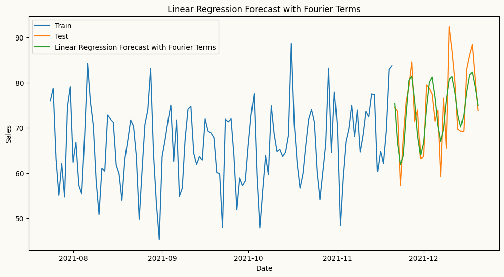

from sklearn.preprocessing import OneHotEncoder
import numpy as np
import pandas as pd
from peshbeen.models import ml_forecaster
from lightgbm import LGBMRegressor
from xgboost import XGBRegressor
date_range = pd.date_range(start='2020-01-01', periods=720, freq='D')
# create a non-stationary arbitrary flower sales data with an upward trend, weekly seasonality, and yearly seasonality
np.random.seed(42)
data = 30 + 0.07 * np.arange(720) + 10 * np.sin(2 * np.pi * date_range.dayofyear / 7) + 10 * np.sin(2 * np.pi * date_range.dayofyear / 365) + np.random.normal(0, 5, 720)
sales_data = pd.DataFrame(data, index=date_range, columns=['sales'])
sales_data["week_day"] = sales_data.index.dayofweek
sales_data["month"] = sales_data.index.month
cat_vars = ["week_day", "month"]
train = sales_data.iloc[:-30]
test = sales_data.iloc[-30:]
# Example of using OneHotEncoder for XGBoost
ohe = OneHotEncoder(sparse_output=False, handle_unknown="ignore", drop="first")
xgb = ml_forecaster(target_col="sales", model=XGBRegressor(n_estimators=100, random_state=42),
lags = 6,
cat_variables=cat_vars, categorical_encoder=ohe)
xgb.fit(train)
xgb_forecasts = xgb.forecast(30, exog=test[cat_vars])Automatic Encoding for Categorical Variables
To encode calendar features as categorical variables, we can use any suitable encoding method from the sklearn.preprocessing module, such as OneHotEncoder, TargetEncoder, or OrdinalEncoder.
In three examples, we will use OneHotEncoder to encode the categorical variables in our dataset. This method creates new binary columns for each category in the original variable.
# How the transformed features look like for XGBoost
xgb.X.head()| week_day_1 | week_day_2 | week_day_3 | week_day_4 | week_day_5 | week_day_6 | month_2 | month_3 | month_4 | month_5 | ... | month_9 | month_10 | month_11 | month_12 | sales_lag_1 | sales_lag_2 | sales_lag_3 | sales_lag_4 | sales_lag_5 | sales_lag_6 | |
|---|---|---|---|---|---|---|---|---|---|---|---|---|---|---|---|---|---|---|---|---|---|
| 2020-01-07 | 1.0 | 0.0 | 0.0 | 0.0 | 0.0 | 0.0 | 0.0 | 0.0 | 0.0 | 0.0 | ... | 0.0 | 0.0 | 0.0 | 0.0 | 22.392017 | 20.219602 | 34.174336 | 38.233477 | 39.472174 | 40.474019 |
| 2020-01-08 | 0.0 | 1.0 | 0.0 | 0.0 | 0.0 | 0.0 | 0.0 | 0.0 | 0.0 | 0.0 | ... | 0.0 | 0.0 | 0.0 | 0.0 | 39.518145 | 22.392017 | 20.219602 | 34.174336 | 38.233477 | 39.472174 |
| 2020-01-09 | 0.0 | 0.0 | 1.0 | 0.0 | 0.0 | 0.0 | 0.0 | 0.0 | 0.0 | 0.0 | ... | 0.0 | 0.0 | 0.0 | 0.0 | 43.518276 | 39.518145 | 22.392017 | 20.219602 | 34.174336 | 38.233477 |
| 2020-01-10 | 0.0 | 0.0 | 0.0 | 1.0 | 0.0 | 0.0 | 0.0 | 0.0 | 0.0 | 0.0 | ... | 0.0 | 0.0 | 0.0 | 0.0 | 39.504995 | 43.518276 | 39.518145 | 22.392017 | 20.219602 | 34.174336 |
| 2020-01-11 | 0.0 | 0.0 | 0.0 | 0.0 | 1.0 | 0.0 | 0.0 | 0.0 | 0.0 | 0.0 | ... | 0.0 | 0.0 | 0.0 | 0.0 | 39.394569 | 39.504995 | 43.518276 | 39.518145 | 22.392017 | 20.219602 |
5 rows × 23 columns
## Example of using TargetEncoder for LightGBM
from sklearn.preprocessing import TargetEncoder
te = TargetEncoder(cv=5)
lgb = ml_forecaster(target_col="sales", model=LGBMRegressor(n_estimators=100, random_state=42, verbose=-1),
lags = 6,
cat_variables=cat_vars, categorical_encoder=te)
lgb.fit(train)
lgb_forecasts = lgb.forecast(30, exog=test[cat_vars])# How the transformed features look like for LightGBM
lgb.X.head()| week_day | month | sales_lag_1 | sales_lag_2 | sales_lag_3 | sales_lag_4 | sales_lag_5 | sales_lag_6 | |
|---|---|---|---|---|---|---|---|---|
| 2020-01-07 | 50.118039 | 46.945004 | 22.392017 | 20.219602 | 34.174336 | 38.233477 | 39.472174 | 40.474019 |
| 2020-01-08 | 55.195593 | 47.235865 | 39.518145 | 22.392017 | 20.219602 | 34.174336 | 38.233477 | 39.472174 |
| 2020-01-09 | 59.591927 | 46.210753 | 43.518276 | 39.518145 | 22.392017 | 20.219602 | 34.174336 | 38.233477 |
| 2020-01-10 | 59.436795 | 46.478067 | 39.504995 | 43.518276 | 39.518145 | 22.392017 | 20.219602 | 34.174336 |
| 2020-01-11 | 57.761881 | 49.035528 | 39.394569 | 39.504995 | 43.518276 | 39.518145 | 22.392017 | 20.219602 |
Automatic Transformations for Rolling Window Features
peshbeen supports user-specified rolling window features — such as rolling means and standard deviations — which can be particularly useful for ML regressors as they capture recent dynamics in the series. Beyond feature engineering, peshbeen can automatically apply a Box-Cox transformation to the target variable when the data exhibits heteroscedasticity, stabilising variance before model fitting and improving forecast reliability.
import matplotlib.pyplot as plt
from peshbeen.transformations import rolling_mean, rolling_quantile, rolling_std, expanding_mean
from peshbeen.models import ml_forecaster
from sklearn.linear_model import LinearRegression
transformations = [rolling_std(window_size=30, shift=1), rolling_mean(window_size=30, shift=7),
rolling_quantile(window_size=30, shift=1, quantile=0.25),
rolling_quantile(window_size=30, shift=1, quantile=0.75), expanding_mean(shift=1)]
linear_model = ml_forecaster(model=LinearRegression(),
target_col='sales', lags = 7, box_cox=0.5,
lag_transform=transformations, cat_variables=cat_vars, categorical_encoder=ohe)
linear_model.fit(train)
# linear_model.data_prep(train)
forecasts = linear_model.forecast(H=30, exog=test[cat_vars])
# plot the forecast and the actual values
plt.figure(figsize=(12, 6))
plt.plot(train.index[-120:], train['sales'][-120:], label='Train')
plt.plot(test.index, test['sales'], label='Test')
plt.plot(test.index, forecasts, label='Linear Regression Forecast')
plt.title('Linear Regression Forecast')
plt.xlabel('Date')
plt.ylabel('Sales')
plt.legend()
plt.show()
# How the transformed features look like for Linear Regression
linear_model.X.head()| week_day_1 | week_day_2 | week_day_3 | week_day_4 | week_day_5 | week_day_6 | month_2 | month_3 | month_4 | month_5 | ... | sales_lag_3 | sales_lag_4 | sales_lag_5 | sales_lag_6 | sales_lag_7 | rolling_std_30_shift_1 | rolling_mean_30_shift_7 | rolling_quantile_30_shift_1_q0.25 | rolling_quantile_30_shift_1_q0.75 | expanding_mean_shift_1 | |
|---|---|---|---|---|---|---|---|---|---|---|---|---|---|---|---|---|---|---|---|---|---|
| 2020-01-08 | 0.0 | 1.0 | 0.0 | 0.0 | 0.0 | 0.0 | 0.0 | 0.0 | 0.0 | 0.0 | ... | 6.993242 | 9.691764 | 10.366645 | 10.565377 | 10.723839 | 1.581041 | 10.723839 | 8.577902 | 10.569034 | 9.482514 |
| 2020-01-09 | 0.0 | 0.0 | 1.0 | 0.0 | 0.0 | 0.0 | 0.0 | 0.0 | 0.0 | 0.0 | ... | 7.464041 | 6.993242 | 9.691764 | 10.366645 | 10.565377 | 1.583857 | 10.644608 | 9.134833 | 10.610479 | 9.696410 |
| 2020-01-10 | 0.0 | 0.0 | 0.0 | 1.0 | 0.0 | 0.0 | 0.0 | 0.0 | 0.0 | 0.0 | ... | 10.572692 | 7.464041 | 6.993242 | 9.691764 | 10.366645 | 1.509947 | 10.551954 | 9.691764 | 10.572692 | 9.793542 |
| 2020-01-11 | 0.0 | 0.0 | 0.0 | 0.0 | 1.0 | 0.0 | 0.0 | 0.0 | 0.0 | 0.0 | ... | 11.193677 | 10.572692 | 7.464041 | 6.993242 | 9.691764 | 1.443708 | 10.336906 | 9.860484 | 10.572169 | 9.869489 |
| 2020-01-12 | 0.0 | 0.0 | 0.0 | 0.0 | 0.0 | 1.0 | 0.0 | 0.0 | 0.0 | 0.0 | ... | 10.570600 | 11.193677 | 10.572692 | 7.464041 | 6.993242 | 1.460908 | 9.668173 | 8.937674 | 10.571646 | 9.716225 |
5 rows × 29 columns
Fourier Terms for Seasonal Patterns
For series with strong seasonal patterns, peshbeen can automatically generate Fourier terms as a DataFrame indexed to match the original series — making them ready to merge as exogenous variables in a single line. Calendar features such as month or day of week can be added directly to the same DataFrame, and peshbeen will automatically encode them as categorical variables. This covers a wide range of calendar effects, from weekend sales spikes to holiday demand shifts.
from peshbeen.transformations import fourier_terms
# create fourier terms for yearly seasonality with period 365 and number of terms 2 to be used as exogenous variables in the model
sales_exog = sales_data.copy() # create a copy of the original data to store the fourier terms
sales_exog.drop(columns=["month"], inplace=True) # drop month column because we will use fourier terms to capture the yearly seasonality instead of using month as a categorical variable
fourier_trms = fourier_terms(index=sales_exog.index, period=365, num_terms=2)
sales_exog = sales_exog.merge(fourier_trms, left_index=True, right_index=True) # merge the fourier terms with the original data to be used as exogenous variables in the model
sales_exog.head()| sales | week_day | sin_1_365 | sin_2_365 | cos_1_365 | cos_2_365 | |
|---|---|---|---|---|---|---|
| 2020-01-01 | 40.474019 | 2 | 0.000000 | 0.000000 | 1.000000 | 1.000000 |
| 2020-01-02 | 39.472174 | 3 | 0.017213 | 0.034422 | 0.999852 | 0.999407 |
| 2020-01-03 | 38.233477 | 4 | 0.034422 | 0.068802 | 0.999407 | 0.997630 |
| 2020-01-04 | 34.174336 | 5 | 0.051620 | 0.103102 | 0.998667 | 0.994671 |
| 2020-01-05 | 20.219602 | 6 | 0.068802 | 0.137279 | 0.997630 | 0.990532 |
# split the data into train and test
from sklearn.linear_model import Lasso
train_exog = sales_exog.iloc[:-30]
test_exog = sales_exog.iloc[-30:].drop(columns=['sales']) # drop the target column from the exogenous variables for the test set
# ml forecast using Linear Regression with fourier terms as exogenous variables
lr_model = ml_forecaster(model=Lasso(alpha=0.1),
target_col='sales', lags = 7, lag_transform=transformations,
cat_variables=["week_day"], categorical_encoder=ohe)
lr_model.fit(train_exog)
lr_forecast = lr_model.forecast(H=30, exog=test_exog)
# plot the forecast and the actual values
plt.figure(figsize=(12, 6))
plt.plot(train.index[-120:], train['sales'][-120:], label='Train')
plt.plot(test.index, test['sales'], label='Test')
plt.plot(test.index, lr_forecast, label='Linear Regression Forecast with Fourier Terms')
plt.title('Linear Regression Forecast with Fourier Terms')
plt.xlabel('Date')
plt.ylabel('Sales')
plt.legend()
plt.show()